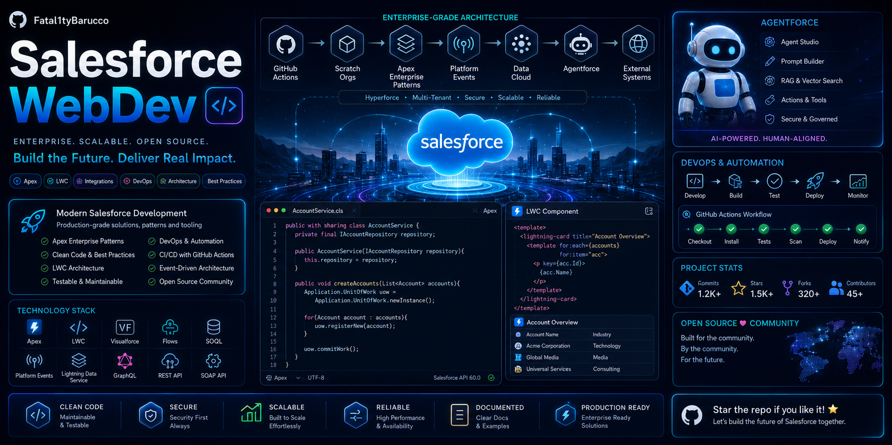

Salesforce Release Intelligence¶

Pipeline automatizado para extração, classificação, análise e versionamento das Release Notes da Salesforce como artefatos Markdown estruturados.
📋 Releases Disponíveis¶
| Release | Features | Categorias | Status |
|---|---|---|---|
| ❄️ Winter '27 | 1,123 | 19 | ✅ Atual |
| ☀️ Summer '26 | 1,373 | 22 | ✅ Completo |
| 🌸 Spring '26 | 1,438 | 21 | ✅ Completo |
| ❄️ Winter '26 | 1,348 | 19 | ✅ Completo |
Cada release inclui resumos executivos gerados por AI (até 5.000 caracteres), resumos por categoria (até 1.000 caracteres), e documentação completa em português e inglês.
📄 Documentação completa:
O Que Este Repositório Faz¶
O Salesforce-WebDev é um pipeline inteligente automatizado (Knowledge-as-Code) que extrai, enriquece via LLM e versiona as Release Notes da Salesforce em Markdown (pt_BR e en_US).
graph TB
SF["Salesforce Help<br/>(SPA JavaScript)"] --> S
S[🎭 Scraper<br/>Playwright + Circuit Breaker] --> P
P[📋 Parser<br/>HTML/Markdown] --> L
L[🧠 LLM<br/>OpenAI/Gemini/OpenCode] --> G
G[📦 Generator<br/>Markdown pt_BR/en_US] --> REL[📄 releases/<br/>Markdown versionado]
G --> API[🌐 REST/GraphQL<br/>API standalone]
G --> NOTIF[📧 Notificações<br/>Email/Slack/Discord]
G --> GH[🐙 GitHub Issues<br/>+ PRs]
G --> DASH[📊 Dashboard<br/>HTML interativo]
G --> LEDGER[📊 SFEL<br/>Rastreamento cross-release<br/>de features individuais]
style S fill:#E3F2FD,stroke:#2196F3
style L fill:#FCE4EC,stroke:#E91E63
style G fill:#F3E5F5,stroke:#9C27B0
style LEDGER fill:#E8F5E9,stroke:#4CAF50
```javascript
O pipeline inclui uma camada de automação AI com 12 módulos, sendo um dos eles o **Salesforce Feature Evolution Ledger (SFEL)** — submódulo `src/automation/ledger/` que rastreia features individuais entre releases consecutivas e mantém histórico consultável.
### Camadas do Pipeline
| Camada | Módulos | Responsabilidade |
|--------|---------|------------------|
| **Orquestração** | `main.py`, `orchestrator.py` | Pipeline principal, DI, detecção de novas releases |
| **Scraping** | `scraper.py` | Playwright headless, circuit breaker, rate limiter |
| **Parsing** | `parser.py` | Árvore de navegação, tabelas de feature impact |
| **LLM** | `llm_service.py` | Multi-provider (OpenAI/Gemini/OpenCode), retry, fallback, rate limiting |
| **Enriquecimento AI** | `feature_enricher.py`, `release_summarizer.py` | Descrições por feature, resumos executivos, impacto por categoria |
| **Automação AI** | `automation/` (12 módulos) | Relatórios AI, triage, impacto, deduplicação, exportação, SFEL |
| **Integração** | `salesforce.py`, `workflow.py` | Trailhead, GitHub CLI, PRs |
| **Saída** | `generator.py`, `release_docs.py`, `notifications.py`, `dashboard.py` | Markdown enriquecido, Email, Slack, Discord, Dashboard |
| **API** | `api.py` | REST + GraphQL + Autenticação + OpenAPI |
| **Infra** | `cache_manager.py`, `circuit_breaker.py`, `events.py`, `health.py` | Cache, resiliência, event bus, Prometheus metrics |
### Automação AI — 12 Módulos
| Módulo | Função |
|--------|--------|
| `automation/service.py` | `AIAutomationService` — Facade para todas as operações AI |
| `automation/reporting.py` | Changelog, regression, diff, quality reports |
| `automation/comparison.py` | Comparação entre releases, detecção de regressões |
| `automation/impact.py` | Análise de impacto por categoria, predição |
| `automation/content.py` | Deduplicação por content-hash |
| `automation/export.py` | Exportação JSON/CSV |
| `automation/github_ops.py` | Criação de GitHub Issues |
| `automation/notifications.py` | Notificações filtradas por perfil |
| `automation/models.py` | Dataclasses (11 modelos) |
| `automation/badge.py` | Badges dinâmicos |
| `automation/ledger/` | **SFEL** — Rastreamento cross-release de features individuais com 5 níveis de matching (EXACT, CATEGORY_CHANGE, FUZZY, HEURISTIC, LLM), geração de `LedgerDiff`/`LedgerStats`, histórico consultável por feature nome, cache TTL + content-hash, eventos no EventBus. Ver [ADR-006](architecture/decisions/adr-006-feature-evolution-ledger.md) |
### Salesforce Feature Evolution Ledger (SFEL)
Rastreia features individuais entre releases consecutivas e mantém histórico consultável. O `FeatureLinker` compara features usando 5 níveis de matching em ordem de confiança (first-match-wins):
1. **EXACT** — nome normalizado idêntico + mesma categoria → `ALIVE` ou `CATEGORY_CHANGED`
2. **FUZZY** — Jaccard dos tokens do nome ≥ 0.5 + mesma categoria → `RENAMED` ou `ALIVE`
3. **HEURISTIC** — mesma categoria + melhor par mútuo com Jaccard ≥ 0.2 → `RENAMED`
4. **LLM** — similaridade 0.2–0.5, desambiguação opcional via LLM → `RENAMED` ou `ALIVE`
`FeatureEvolutionLedgerService` gera `LedgerDiff` + `LedgerStats` entre dois releases, cacheia com TTL 1h via `CacheManager` (namespace `sfel`), emite evento `ledger.generated` no EventBus e permite consulta de histórico completo de qualquer feature.
Status de lifecycle: `BORN`, `ALIVE`, `RENAMED`, `CATEGORY_CHANGED`, `DEPRECATED`, `REMOVED`.
## Arquitetura em Camadas
| Camada | Módulos | Responsabilidade |
|--------|---------|------------------|
| **Orquestração** | `main.py`, `orchestrator.py` | Pipeline principal, DI, detecção de novas releases |
| **Scraping** | `scraper.py` | Playwright headless, circuit breaker, rate limiter |
| **Parsing** | `parser.py` | Árvore de navegação, tabelas de feature impact |
| **LLM** | `llm_service.py` | Multi-provider (OpenAI/Gemini/OpenCode), retry, fallback, rate limiting |
| **Enriquecimento AI** | `feature_enricher.py`, `release_summarizer.py` | Descrições por feature, resumos executivos, impacto por categoria |
| **Automação** | `automation/` | Relatórios AI, triage, impacto, deduplicação, exportação |
| **Integração** | `salesforce.py`, `workflow.py` | Trailhead, GitHub CLI, PRs |
| **Saída** | `generator.py`, `release_docs.py`, `notifications.py` | Markdown enriquecido, Email, Slack, Discord |
| **API** | `api.py` | REST + GraphQL + Autenticação + OpenAPI |
| **Infra** | `cache_manager.py`, `circuit_breaker.py`, `events.py`, `health.py` | Cache, resiliência, event bus, Prometheus metrics |
## Quick Start
```bash
# 1. Instalar dependências
uv sync --extra dev
# 2. Instalar navegador Playwright
uv run playwright install chromium
# 3. Executar pipeline
uv run python src/main.py
# 4. Executar testes
uv run pytest
# 5. Verificar cobertura
uv run pytest --cov=src --cov-fail-under=95
```markdown
## Variáveis de Ambiente
| Variável | Obrigatória | Descrição |
|----------|-------------|-----------|
| `OPENAI_API_KEY` | Não* | Chave da API OpenAI para relatórios AI |
| `GOOGLE_API_KEY` | Não* | Chave do Google Gemini (fallback) |
| `OPENCODE_API_KEY` | Não* | Chave OpenCode (compatível OpenAI) |
*Pelo menos uma chave LLM é necessária para funcionalidades de IA (classificação, resumos, triage).
## Fluxo de Execução do Pipeline
```mermaid
sequenceDiagram
participant M as main.py
participant S as Scraper
participant P as Parser
participant L as LLM
participant G as Generator
participant N as Notifications
participant H as Health
M->>H: set_pipeline_status("running")
M->>S: detect_new_release()
S->>S: fetch_page_raw_text(current)
S->>S: fetch_page_raw_text(next)
S-->>M: ReleaseInfo | None
alt Nova release detectada
M->>S: fetch_page_raw_text(feature_impact_url)
S-->>M: raw_text
M->>P: parse_text(raw_text)
P-->>M: categories[]
M->>G: generate_release_files(categories)
G->>G: Markdown por categoria (pt_BR + en_US)
G->>G: Atualizar README
M->>L: classify_release(slug)
L-->>M: ClassificationResult
M->>L: generate_changelog()
M->>L: generate_quality_report()
M->>L: generate_regression_report()
M->>N: send_notifications(slug)
M->>M: create_github_issue()
end
M->>H: set_pipeline_status("completed")
```text
## Módulos Principais
### Pipeline (`main.py`)
Orquestrador central. Responsável por:
- **`detect_new_release()`** — Compara conteúdo da release atual vs próxima para detectar novidades
- **`_process_single_release()`** — Fetch, parse, geração de arquivos Markdown
- **`_generate_ai_reports_async()`** — Gera relatórios AI concorrentemente (changelog, quality, regression, diff)
- **`_enrich_meta_with_classification()`** — Adiciona classificação de features ao `.meta.json`
- **`run_pipeline(config: PipelineConfig)`** — Orquestrador principal com DI
```python
# Uso com injeção de dependências
config = PipelineConfig(dry_run=True, release_filter="summer_26")
await run_pipeline(config)
```text
### Scraper (`scraper.py`)
Scraping resiliente do Salesforce Help (SPA JavaScript):
- **Playwright headless** — Renderiza JavaScript completo
- **Circuit Breaker** — Para após N falhas consecutivas, retoma após cooldown
- **Rate Limiter** — Token-bucket para respeitar limites de requisição
- **Retry com backoff** — Até 5 tentativas com delay exponencial + jitter
- **Cache** — Evita re-fetch de conteúdo inalterado
```mermaid
stateDiagram-v2
[*] --> Closed
Closed --> Open: failures >= threshold
Open --> HalfOpen: cooldown expirado
HalfOpen --> Closed: sucesso
HalfOpen --> Open: falha
Closed --> Closed: sucesso (reset)
```text
### LLM Service (`llm_service.py`)
Serviço LLM multi-provider com fallback automático:
- **Providers**: OpenAI → Google Gemini → OpenCode
- **Circuit Breaker** por provider (independente)
- **Retry com tenacity** — 3 tentativas, backoff exponencial
- **Timeout** — 30s (cliente) / 60s (operação)
```mermaid
graph LR
REQ["Request"] --> OAI["OpenAI"]
OAI -->|falha| GEM["Gemini"]
GEM -->|falha| OC["OpenCode"]
OC -->|falha| NULL["return None"]
```javascript
### Parser (`parser.py`)
Parsing de duas fontes:
1. **Árvore de navegação** — Extrai hierarquia de tópicos do portal Salesforce Help
2. **Feature Impact** — Parseia tabelas de impacto de features por categoria
### Automação (`automation/`)
Pacote de automação AI com 11 módulos:
| Módulo | Função |
|--------|--------|
| `service.py` | `AIAutomationService` — Facade para todas as operações AI |
| `reporting.py` | Changelog, regression, diff, quality reports |
| `comparison.py` | Comparação entre releases, detecção de regressões |
| `impact.py` | Análise de impacto por categoria, predição |
| `content.py` | Deduplicação por content-hash |
| `export.py` | Exportação JSON/CSV |
| `github_ops.py` | Criação de GitHub Issues |
| `notifications.py` | Notificações filtradas por perfil |
| `models.py` | Dataclasses (11 modelos) |
| `badge.py` | Badges dinâmicos |
### API REST/GraphQL (`api.py`)
Servidor HTTP standalone (stdlib):
| Endpoint | Método | Descrição |
|----------|--------|-----------|
| `/releases` | GET | Lista todas as releases |
| `/releases/{slug}` | GET | Detalhes de uma release |
| `/releases/{slug}/categories/{name}` | GET | Features de uma categoria |
| `/diff/{current}/{previous}` | GET | Comparação entre releases |
| `/graphql` | POST | Query GraphQL flexível |
| `/openapi.json` | GET | Especificação OpenAPI 3.0 |
### Notificações (`notifications.py`)
Dispara notificações para múltiplos canais:
- **Email** — SMTP com TLS (timeout 30s)
- **Slack** — Webhook com blocos formatados
- **Discord** — Webhook com embeds
### Health (`health.py`)
Monitoramento via HTTP:
| Endpoint | Descrição |
|----------|-----------|
| `/health` | Status geral + uptime + métricas |
| `/ready` | Readiness probe |
| `/metrics` | Métricas Prometheus (texto plano) |
### Cache Manager (`cache_manager.py`)
Cache unificado com duas estratégias:
- **TTL** — Expiração por tempo (respostas de API, metadados)
- **Content-hash** — Invalidação por mudança de conteúdo (arquivos Markdown)
### Circuit Breaker (`circuit_breaker.py`)
Pattern reutilizável para chamadas externas:
- Estados: CLOSED → OPEN → HALF-OPEN
- Configurável: threshold (falhas) + cooldown (segundos)
- Usado por: Scraper, LLM Service
## Estrutura de Diretórios
```text
Salesforce-WebDev/
├── ai/
├── collectors/
├── config/
├── generators/
├── integrations/
├── llm/
├── prompts/
├── schemas/
└── orchestrator.py
├── automation/
├── ledger/
├── badge.py
├── comparison.py
├── content.py
├── export.py
├── github_ops.py
├── impact.py
├── models.py
├── notifications.py
├── reporting.py
└── service.py
├── core/
├── classification/
├── enrichment/
├── pipeline/
├── summarization/
├── design-system/
├── components/
├── domain/
├── llm.py
└── scraper.py
├── impact_propagation/
├── engine.py
├── graph_builder.py
├── heuristic_fallback.py
└── models.py
├── infrastructure/
├── api/
├── llm_adapters/
├── mcp/
├── scraping/
├── generation.py
├── github.py
├── llm.py
├── messaging.py
├── notification_step.py
├── parsing.py
├── storage.py
└── translation.py
├── limiters/
└── rate_limiter.py
├── models/
├── api.py
├── classification.py
├── enrichment.py
├── feature.py
└── release.py
├── ai_automation.py
├── analytics.py
├── api.py
├── cache_manager.py
├── circuit_breaker.py
├── config.py
├── dashboard.py
├── documentation_service.py
├── events.py
├── exceptions.py
├── feature_classifier.py
├── feature_enricher.py
├── generator.py
├── health.py
├── heuristic_classifier.py
├── i18n.py
├── impact_analyzer.py
├── issue_triage.py
├── llm_service.py
├── logger.py
├── main.py
├── nl_search.py
├── notifications.py
├── orchestrator.py
├── parser.py
├── release_discovery.py
├── release_docs.py
├── release_summarizer.py
├── salesforce.py
├── scraper.py
├── smart_notifications.py
├── translator.py
└── workflow.py
├── .claude/
├── .devcontainer/
├── .github/ # Workflows e scripts do GitHub
├── docs/ # Documentação MkDocs
├── intelligence/
├── k8s/ # Manifestos Kubernetes
├── prompts/
├── releases/ # Artefatos Markdown por release
├── report_parts/
├── scripts/ # Scripts utilitários
├── tests/ # Suíte pytest
├── .mcp.json
├── .mutmut-cache
├── .promptfoo.yaml
├── .python-version
├── .ruffignore
├── AGENTS.md # Diretrizes para agentes de código
├── CHANGELOG.md # Changelog do projeto
├── CLAUDE.md
├── CONTRIBUTING.md # Guia de contribuição
├── DESIGN.md
├── Dockerfile # Imagem Docker de runtime
├── FASE5_COMPLETION_REPORT.md
├── IA_AUDIT_REPORT.md
├── MUTATION_TESTING_REPORT.md
├── PLANO_DE_MODERNIZACAO.md
├── PRODUCT.md
├── PROPOSTA_FEATURE_RIPE.md
├── README.en.md # Readme em inglês
├── README.md # Readme em português
├── SECURITY.md # Política de segurança
├── commit_fixes.sh
├── drift_report.json
├── fix_md.py
├── mkdocs.yml # Configuração MkDocs
├── mutmut_config.toml
├── pr_body.md
├── pyproject.toml # Configuração do projeto
├── reconcile_summary.md
├── update
└── uv.lock # Lockfile determinístico
Qualidade de Código¶
| Ferramenta | Configuração | Status |
|---|---|---|
| Ruff | line-length=100 | ✅ Pass |
| Black | target-version=py314 | ✅ Pass |
| Mypy | strict=true | ✅ Pass |
| Pytest | --cov-fail-under=95 | ✅ 95%+ |
Documentação¶
- Contribuição
- Guia de Desenvolvimento Local
- Arquitetura — Visão arquitetural detalhada
- Decisões (ADRs) — Decisões de design documentadas
- Manutenção — Guias de desenvolvimento local e troubleshooting
- Observabilidade — Logging e health checks
- Runbooks — Procedimentos de resposta a falhas
- API Reference — Referência autogerada a partir de docstrings
- Roadmap — Planejamento v1 → v4